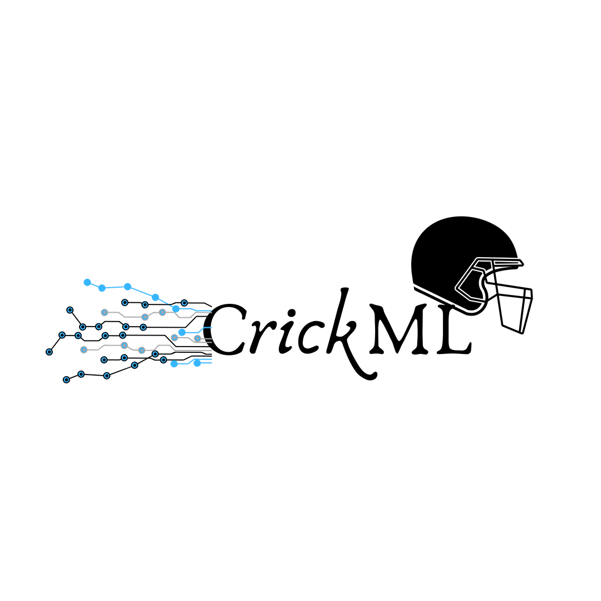

<div class="image-wrapper">
    
</div>
<nav class="menu-navigation-dark">
    
  <a href="#" class="selected"><i class="fas fa-home"></i><span>Home</span></a>
  <a href="#"><i class="fas fa-baseball-ball"></i><span>Players</span></a>
  <a href="#" ><i class="fa fa-comment"></i><span>Talks</span></a>
  <a href="#"><i class="fas fa-users"></i><span>Domestic Players</span></a>
  <a href="#"><i class="fa fa-heart"></i><span>About</span></a>
</nav>

<div class="player-pool">Player Pool <i class="fas fa-level-down-alt"></i> </div>
<div class="border-wrap-left" id="overflow-style">
<div id='parent_div_1' cdkDropList #pool="cdkDropList" [cdkDropListData]="playerPool" [cdkDropListConnectedTo]="[selected]"
  (cdkDropListDropped)="dropped_custom($event)" fxLayout="row wrap" fxLayoutGap="5%" fxLayoutAlign="flex-start">

  <mat-card class="card-picture" fxFlex="0 1 calc(33.3% - 32px)" *ngFor="let player of playerPool; let i = index" cdkDrag>
    <mat-card-title fxLayout.gt-xs="row" fxLayout.xs="column">
      <span fxFlex="80%" class="custom-font">{{player.player_name}}</span>
      <mat-icon fxFlex="10%"><i class="fas fa-eye"></i></mat-icon>
      <!-- <mat-icon fxFlex="10%">delete</mat-icon> -->
    </mat-card-title>
    <!-- <div> -->
    
  <!-- </div> -->
  </mat-card>
</div>
</div>

<!-- <mat-divider [vertical]="true"></mat-divider> -->
<div class="selected-players">Selected Players <i class="fas fa-level-down-alt"></i></div>
<div class="border-wrap-right" id="overflow-style" >
<div id='parent_div_2' cdkDropList #selected="cdkDropList" [cdkDropListData]="selectedPlayers" [cdkDropListConnectedTo]="[pool]"
  (cdkDropListDropped)="dropped($event)" fxLayout="row wrap" fxLayoutGap="5%" fxLayoutAlign="flex-start">
  <mat-card class="card-picture" fxFlex="0 1 calc(33.3% - 32px)" *ngFor="let player of selectedPlayers; let i = index" cdkDrag>
    <mat-card-title fxLayout.gt-xs="row" fxLayout.xs="column">
      <span fxFlex="80%">{{player.player_name}}</span>
      <mat-icon fxFlex="10%"><i class="fas fa-eye"></i></mat-icon>
      <!-- <mat-icon fxFlex="10%">del ete</mat-icon> -->
    </mat-card-title>
    
  </mat-card>
</div>
</div>

<mat-form-field class="primary-select">
  <mat-label>Analysis Mode*</mat-label>
  <mat-select [(value)]="mode">
    <!-- <mat-option>None</mat-option> -->
    <mat-option value="1">Score Ranking</mat-option>
    <mat-option value="2">Class Distribution</mat-option>
  </mat-select>
</mat-form-field>
<div class="primary-button">
<!-- <button mat-fab color="primary" (click) = "analysePlayers()">Primary</button> -->
<button mat-raised-button color="accent" (click) = "analysePlayers()" [disabled]="selectedPlayers.length === 0" [ngClass]="{'custom-btn': selectedPlayers.length != 0}">Analyze Players</button>
</div>


<router-outlet></router-outlet>
